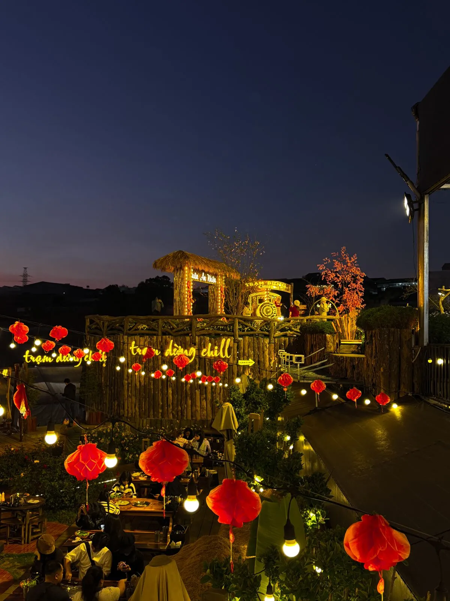
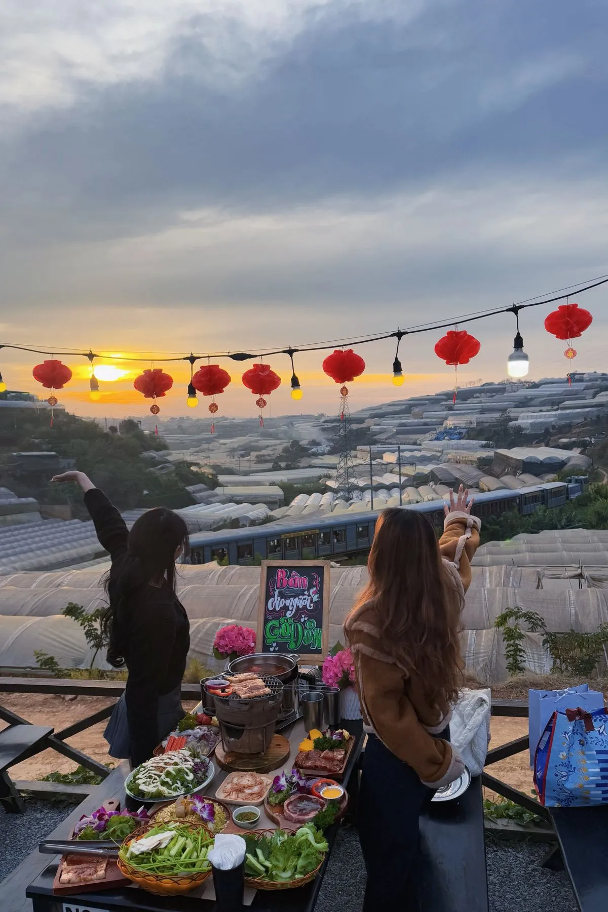

Check-in quán nướng — Trend 2027
Instagram, TikTok tràn ngập hình check-in quán nướng Đà Lạt — bếp than hồng giữa hoàng hôn vàng, đĩa đồ nướng bốc khói view triệu đô. Đây không chỉ là ăn uống mà còn là trải nghiệm visual đỉnh cao. Biết góc chụp đẹp = triệu like!
10 góc chụp triệu like
1. Golden hour + bếp nướng: 16:30-17:30, ánh nắng vàng chiếu vào bếp than — ảnh siêu ấm. 2. Silhouette hoàng hôn: Đứng ngược sáng, outline người + bếp nướng. 3. Đồ ăn flat-lay: Chụp từ trên xuống, bày đẹp trên bàn gỗ.

4. Biển sao nhà lồng: 19:00-20:00, chụp view phía sau. 5. Xe lửa chạy ngang: Khoảnh khắc tàu qua — chỉ có tại Trạm Dừng Chill! 6. Bốc khói dramatic: Chụp close-up thịt nướng đang bốc khói.

7. Couple bên bếp nướng: Ánh lửa ấm, background mờ — romantic. 8. Nhóm bạn cheers: Nâng ly vang, background hoàng hôn. 9. Boomerang gắp thịt: Video ngắn gắp thịt nướng, khói bay. 10. Night view panorama: Chụp rộng toàn cảnh biển sao + thành phố.

Góc chụp đẹp nhất tại Trạm Dừng Chill
Trạm Dừng Chill có 3 góc check-in "huyền thoại": Bàn hàng đầu view hoàng hôn (golden hour), khu vực view xe lửa (khoảnh khắc tàu qua), và toàn cảnh biển sao nhà lồng (after dark). Đặt bàn góc check-in đẹp →
Mẹo chụp ảnh đẹp
Đến sớm 16h để "săn" golden hour. Dùng portrait mode cho bokeh đẹp. Đèn flash tắt — ánh lửa than tự nhiên đẹp hơn. Chụp video slow-mo khói bay lên.
Kết luận
Check-in quán nướng Đà Lạt 2027 — Trạm Dừng Chill là quán có nhiều góc chụp đẹp nhất! Đặt bàn ngay →